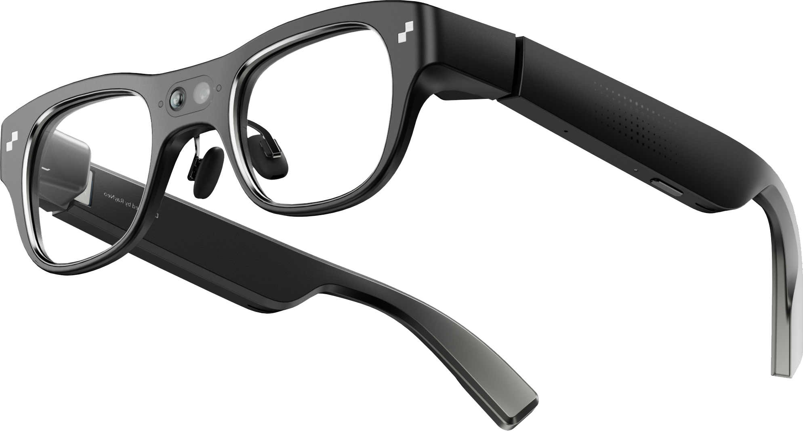
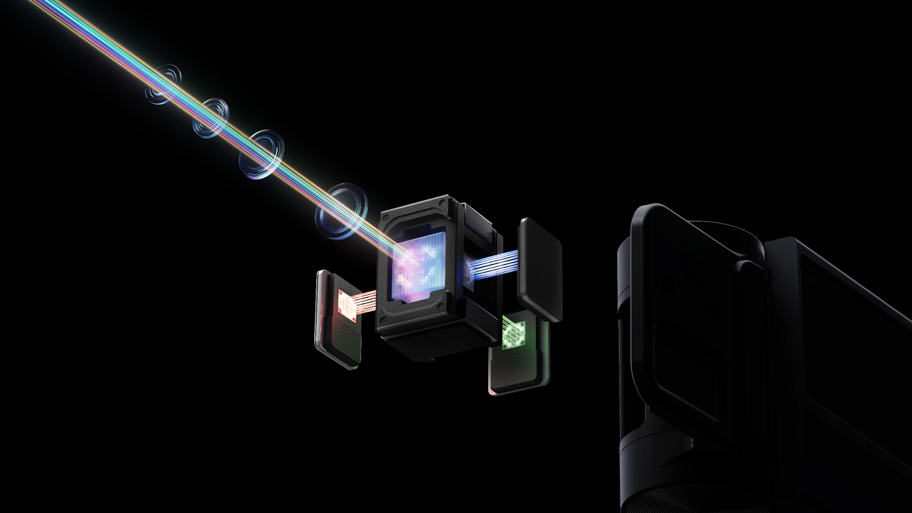
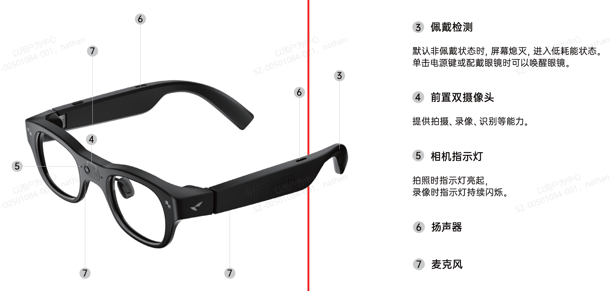
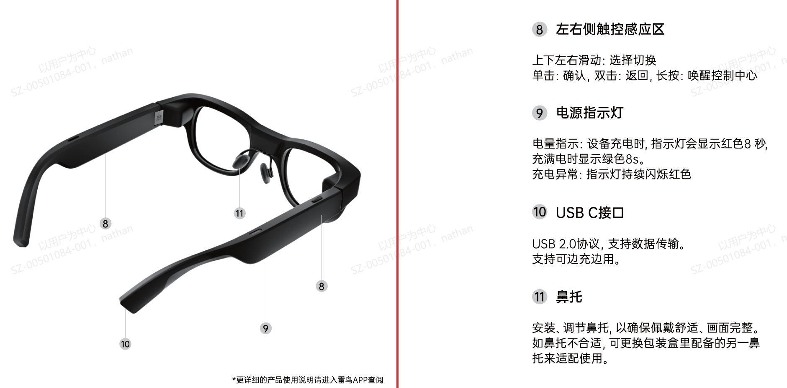
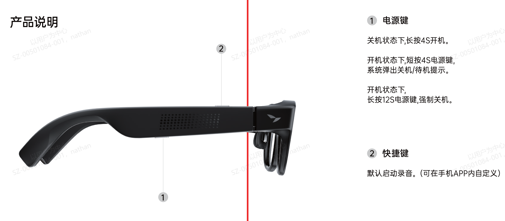

You can program
a pair of glasses.
This is the RayNeo X3 Pro — a complete computer folded into eyeglasses, with two tiny projectors that paint light onto the world. And here's the secret: you don't have to be a programmer to teach it new tricks.

Seventy grams. Four processor cores. Two projectors, three microphones, two cameras, and one very patient computer waiting for your ideas.
01The light trick
Inside each temple arm hides a projector smaller than a pencil eraser. It shoots light into a waveguide — a sliver of patterned glass in each lens that bends the beam around corners and delivers it straight into your eye. The picture seems to float in the air, about as big as a 43-inch TV hanging two meters in front of you.

The real optical engine, exploded view: a full-color MicroLED cube firing red, green and blue down the waveguide. This is the entire "screen."
The most magical rule in this whole guide
A phone makes black by showing dark pixels. A waveguide makes black by projecting nothing at all — so anywhere an app paints black, you simply see the world. Black is invisible. Every beautiful X3 app is bright shapes floating on a canvas of nothing:
Left: an app painting black = you just see the world. Right: the same view with one glowing line of UI. That's the whole aesthetic.
02Two eyes, one picture
Apps draw their interface once, onto a little canvas of 640 × 480 pixels. Then a fifty-line piece of code copies that canvas twice — left eye, right eye — and your brain fuses the twins into a single steady picture. That's it. That's the secret of "binocular AR."
Identical twins, fused by your brain into one floating screen. (Show each eye a slightly different image instead, and things start looking 3D — the hardware can do that too.)
03Meet the body
The official anatomy diagrams below come from RayNeo's developer deck (labels in Chinese — translations underneath each).

The face. ③ wearing-detection sensor (it knows when you put them on) · ④ the two front cameras — one sharp 12-megapixel eye, one super-wide helper · ⑤ camera indicator light · ⑥ speakers · ⑦ microphones (three of them, working as a team).

The controls. ⑧ touch pads on both temple arms — slide to move, tap to choose · ⑨ power light · ⑩ USB-C for charging (and for loading your creations!) · ⑪ adjustable nose pads.

The buttons. ① power (hold 4 seconds to wake) · ② shortcut button — this one belongs to the system, not to apps. Everything else is yours to play with.
04The secret language of taps
No keyboard. No touchscreen. You talk to the glasses by tapping and sliding on the temple arms — a tiny gesture language that every X3 app shares:
Slide
moves a glowing cursor across the floating screen — like a trackpad on your face.
Tap
click! Choose the thing under the cursor.
Double-tap
the universal "never mind" — close, cancel, go back.
Triple-tap
switch modes: cursor ↔ scroll, or re-center the screen in front of you.
Press & hold
the "show me more" gesture — context menus and extras.
Swipe up, dimmed
in one app, this opens a night sky that breathes with your music. More on that below.
And one more trick: the glasses feel which way your head turns. An app can pin its window to a spot in the room — look away and it stays put, waiting where you left it.
05A true story
🌌 The visualizer that was built for a daughter
One of the apps running on these exact glasses contains a hidden night sky. Swipe up while the screen is dimmed, and stars shimmer with the high notes of whatever music is playing. Ribbons of indigo and seafoam ride the melody. A soft orb pulses with the bass — and the whole sky gently brightens and dims in a slow rhythm: breathe in, four seconds… hold… breathe out, six.
It was made by a dad, for his daughter, as a calm place to put her eyes and her breath.
Here is the part that matters: he didn't type the code. He described the feeling — "a night sky that breathes with the music, peaceful colors, never neon" — and an AI partner wrote the program, and together they tested it on the glasses until it felt right. The dad brought the taste and the love. The AI brought the syntax.
That way of building things has a name.
06Vibe coding
Vibe coding is making software by describing what you want — clearly, vividly, honestly — and letting an AI write the actual code. Your job isn't typing; it's noticing and describing. The loop looks like this:
The best vibe coders aren't the best typists — they're the best describers. "The text is ugly" gets you nowhere. "The text is too small to read against a bright sky — make it bigger, white, with a soft black shadow" gets you exactly what you imagined. Specific beats technical, every single time.
What you actually need
🧠 Curiosity · 👀 Patience to test and re-test · 🗣️ Precise words for fuzzy feelings · 💻 A computer with a USB-C cable · 🤝 An AI partner that knows this hardware (there's a 500-line briefing document ready to hand it — see the end).
07People are already doing this
Real apps, running on these glasses today — several of them vibe-coded, all of them open for you to learn from:
🎙️ TapInsight voice AI
A talking assistant that sees what you see, shows song lyrics on the dimmed lenses, rings a little bell for notifications — and contains the breathing night sky from the story above. github.com/tropicalstream/TapInsight-2b
🧩 Everyday widgets
A glanceable dashboard — look up to wake it. Proof that a clean, simple idea makes a lovely glasses app. github.com/TheophileGaudin/Everyday
📺 SmartTube video
A whole TV-style YouTube app, steered entirely by temple taps. The port that made it work is barely six files. github.com/oliverfederico/SmartTube-RayNeo-X3-Pro
🎮 Moonlight gaming
Streams PC games to your eyes at a smooth 60 frames per second — proof these little glasses have real muscle. github.com/informalTechCode/moonlight-android-RayNeoX3
08Words you'll hear (decoded)
- app / APK
- The finished program, packed in a box. The APK is the box.
- build
- Turning human-readable code into that box. Takes about a minute. Sometimes it fails — that's normal, not scary; the error message is just the computer asking a question.
- adb
- The cable-whisperer: a little tool that carries your new app from the computer into the glasses through the USB-C cord.
- bug
- The app doing what you said instead of what you meant. Fixing them is the actual sport.
- commit
- A save-point for code, like in a video game. The house rule on this project, learned the hard way: save early, save often, push it somewhere safe.
- repo
- The shared folder where a project lives, with every save-point remembered.
09Your first adventure
- Dream small and specific. Not "an amazing app" — more like: "when I look up, show the time, softly, in the corner." Tiny ideas make magical first apps.
- Recruit your AI partner and hand it the briefing: a document called
FABLE_X3_STARTER_GUIDE.mdcontains everything it needs to know about these glasses — every quirk already discovered, every mistake already made once so you don't have to. - Describe, and let it build. Answer its questions. Be picky. Picky is a skill.
- Wear your work. One cable, one command, and your idea is floating in front of your eyes. (Enabling the connection is a real Easter egg: in the glasses' settings you swipe to the far edge and bounce against it ten times. Yes, really.)
- Feel it, tweak it, repeat. The gap between "it works" and "it feels right" is where you become a developer — whether or not you ever type a line of code.